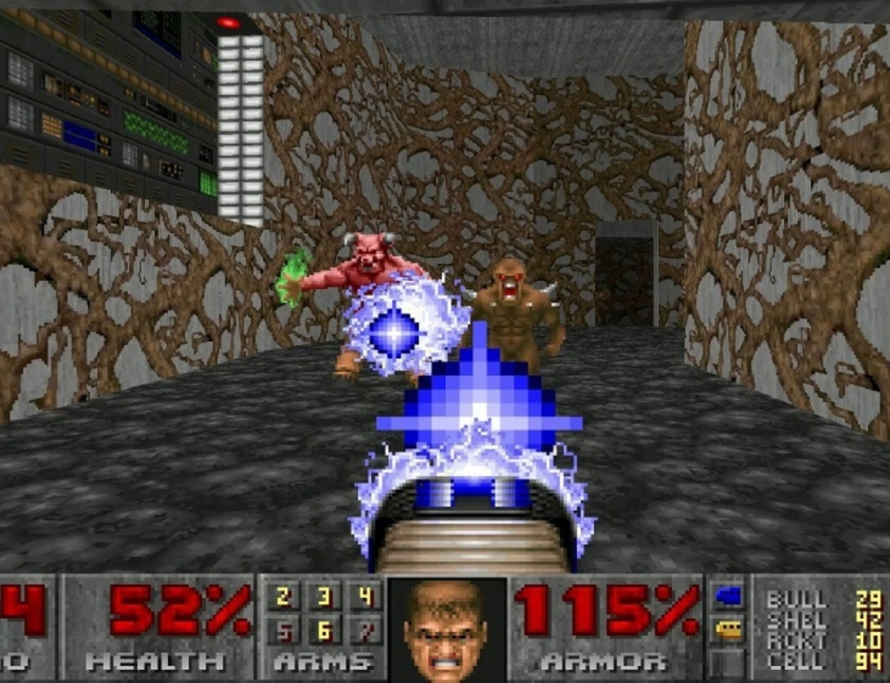

Technologies fondamentales, Protocoles...
Dans ce premier chapitre, nous traiterons des bases de la transmission de l'information entre différents terminaux grâce à internet. Nous parlerons des deux technologies, le peer to peer et le client-serveur, qui peuvent être utilisées et comment celles-ci fonctionnent. Nous développeront principalement le client-serveur, technologie majeure aujourd'hui.
Le peer to peer (ou P2P) est un modèle d'échange décentralisée où, dans un réseau, chaque utilisateur (ou "pair") est connecté aux autres; ainsi, chaque terminal est en même temps client et serveur, puisque qu'il store, transmet et exploite les informations. Au départ, les jeux multijoueurs utilisaient exclusivement le modèle P2P pour sa simplicité, mais ses failles ont notamment été découvertes après la création du jeu DOOM par id Software.
Ce jeu de tire en première personne (ou FPS, First Person Shooter), pionnier de son genre, était en effet le premier jeu où les problèmes de latence du P2P ont été remarquées, puisqu'il nécessicitait des inputs (entrées d'utilisateur) très rapides et réactives, ce que le P2P n'était pas toujours capable de supporter.
De plus, le P2P n'est pas un modèle extrêmement sécurisé. Les données et informations sont fiables, certes, mais n'importe quel personne qui s'y connait un peu en networking peu facilement pirater un jeu P2P et modifier les données des échanges pour, par exemple, se donner des avantages (c'est-à-dire, tricher).
Aujourd'hui, peu de jeux vidéo font usage du P2P, et certains ne l'utilisent que dans certaines situations. Le jeu multijoueur Among Us par Innersloth, par exemple, utilise un modèle P2P uniquemennt quand le jeu est joué en local, c'est-à-dire sur un seul et même réseau (en général Wi-Fi ou LAN), car ceci ne nécessite pas les échanges sécurisées d'un serveur.
(Il n'empêche que le modèle P2P est toujours très utilisé aujourd'hui, notamment dans le milieu du téléchargement de contenu avec les torrents, mais cela n'a aucun rapport avec le fonctionnement des jeux vidéo.)
Aujourd'hui, le P2P n'est qu'utilisé dans certaines situations très spécifiques. Le modèle de loins le plus important, et celui dont nous allons parler sur le reste de ce site, est le modèle client-serveur.
Le modèle client-serveur est très simple. Il y a plusieurs terminaux connectés, qui peuvent jouer deux rôles :
Les clients ne sont pas connectés entre eux, mais chacun est connecté au serveur. Ainsi, les échanges suivent ce parcours : client α → serveur → client β.
L'avantage de cet environnement est sa fiabilité, sa rapidité et sa sécurité, notamment. L'utilisation d'un serveur permet une bien plus grande vérification des données échangées, ainsi qu'un chiffrage ou une sécurisation des données bien supérieure à celle du P2P.
Ce modèle a toutefois des incovénients ; il est par exemple beaucoup plus coûteux que le P2P. De plus, si l'on met en place un seul serveur et que celui-ci tombe en panne, alors tous les échanges deviennent impossibles et les fonctionnalités multijoueur d'un jeu disparaisse très vite. Heureusement le coût n'est souvent pas un problème pour les studios de jeux vidéo, et à la place de mettre en place leur propre serveur, cesdits studios louent en général des serveurs à une entreprise tierse, comme Amazon (avec AWS).
Il existe plusieurs protocoles d'échange de données que l'on peut exploiter pour créer des jeux multijoueurs. Chacun est basé sur l'IP que nous connaissons tous, protocole fondamental qui utilise des adresses afin d'envoyer des paquets d'information.
Les deux protocoles principaux sont les protocoles UDP et TCP.
La lenteur du TCP est dûe au mode de fonctionnement de ce protocole ; normalement, quand un terminal envoie un paquet d'informations à un autre (par exemple un serveur), le receveur est censé envoyé ce qu'on appelle un ACK (acknowledgement en anglais). Si celui-ci n'arrive pas avant un peu de temps (c'est à dire quelques millisecondes), c'est sans doute qu'il est perdu, et le paquet concerné est renvoyé ; on attend à nouveau un ACK. Le TCP, cependant, ne renvoie jamais d'ACK et attend que le premier paquet soit retrouvé, ce qui est utile en termes de sécurité mais est au détriment de la latence.
Ainsi, il faut choisir quel protocol utiliser dans son jeu de façon adéquate. On peut prendre le TCP pour des jeux RTS, des jeux en tour par tour, des jeux assez lents ou d'autres jeux ne nécessitant pas des actions très précises et rapides. On peut même le prendre pour des jeux compétitifs joués uniquement en connection LAN, qui n'auront aucun problème de latence. A l'opposé, le UDP reste la norme pour des jeux rapides et précis (Super Smash Bros., Dragon Ball FighterZ, DOOM Eternal...) qui nécessitent parfois des inputs au 60e de seconde près.